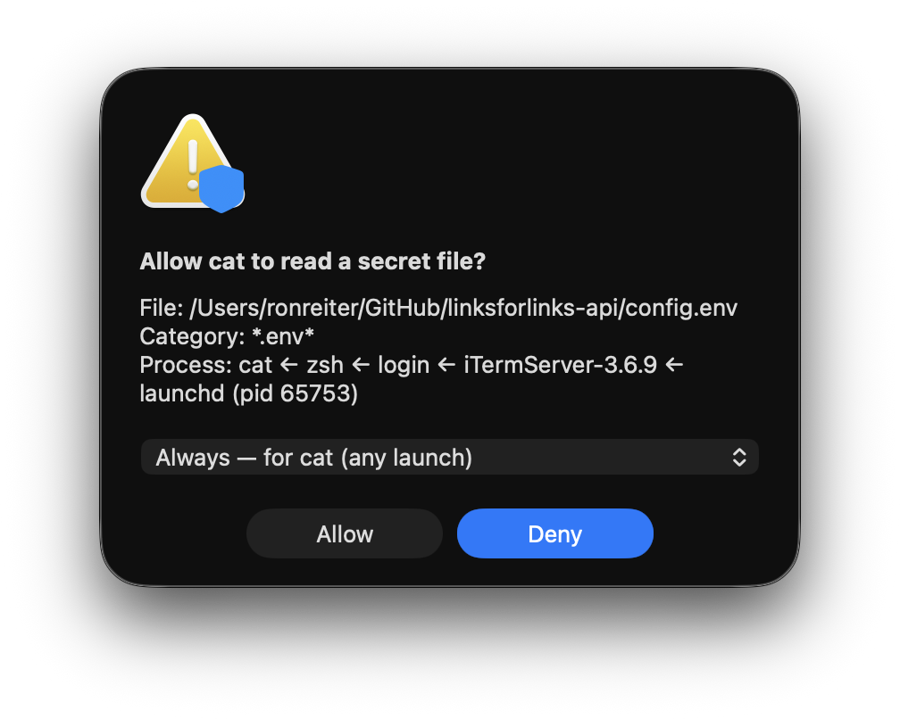
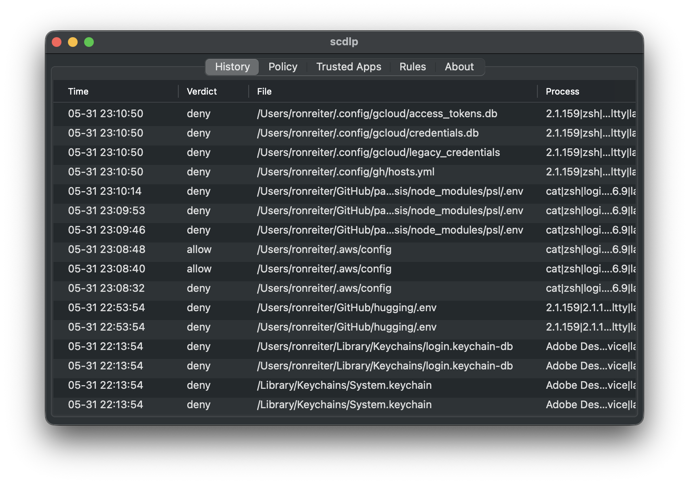
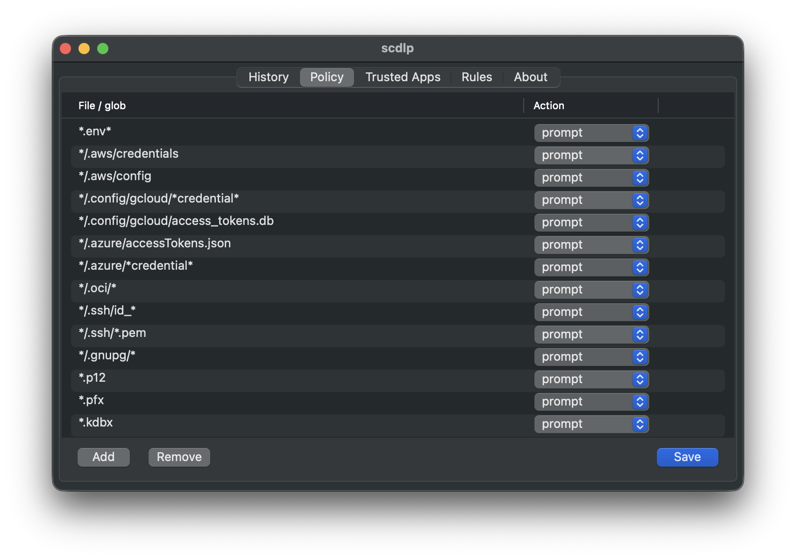
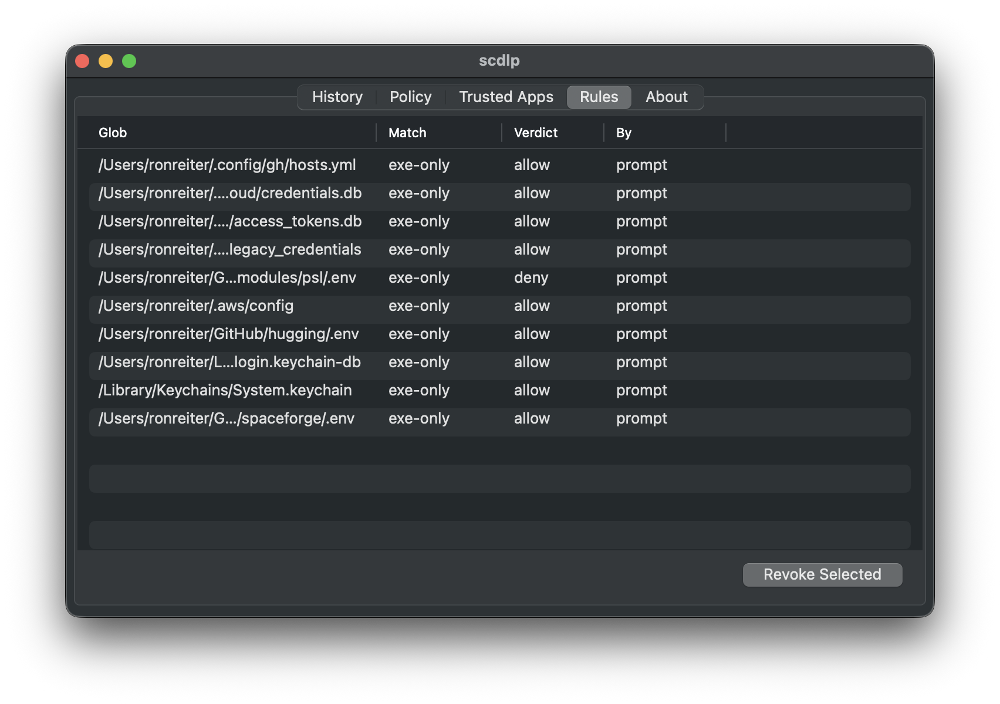

By default, SCDLP blocks any process from reading the secret files in your policy — .env files, cloud keys, SSH/GPG, tokens. Each read pauses in the kernel until you approve it with a Little-Snitch-style prompt, so a compromised dependency or rogue AI agent can't exfiltrate what it can't read.
One npm install runs code you never read.
npm / pip / cargo / gem run arbitrary scripts on install. The classic payload reads
~/.aws/credentials, ~/.npmrc, .env and phones home.
Agentic tools scan your working directory for "context" — sweeping up .env files
and cloud tokens you never meant to share.
By default macOS lets any process you run read any file you can. You never even see it happen — until the breach notification arrives.
In September 2025, Shai-Hulud became the first self-replicating worm on npm.
A trojanized package's install script scanned the machine for secrets (npm tokens,
~/.aws/credentials, .env, SSH & GitHub tokens), exfiltrated them to
public repos, then used the stolen npm publish token to infect every other
package the victim maintained. Hundreds of packages fell within hours — and the next
npm install spread it further.
The entire worm depends on one move: reading your credentials off disk. SCDLP breaks the chain right there.
npm install a compromised dependency.postinstall script runs with your privileges.~/.npmrc, ~/.aws/credentials, .env… → SCDLP blocks the read.No credentials leave disk, so there is nothing to steal and no token to propagate with — even for a brand-new package SCDLP has never seen.
A signed system extension on Apple's Endpoint Security framework — kernel-grade, not a shim.
SCDLP subscribes to authorization open events. Every read of a
protected file pauses in-kernel until SCDLP decides.
It resolves the full process ancestry — which program, launched by what, under which app — and matches the file against your policy of path globs.
Known-good? Allowed instantly. Unknown? Denied first, and you get a prompt:
"Allow node to read ~/.aws/credentials?"
Your choice becomes a scoped rule — this exact file, this program, or this whole trusted app — so you're asked once, not every time.
Defense that stays out of your way.
Reads are blocked before the bytes leave disk — not logged after the fact.
A table of path globs (*.env*, */.aws/credentials, …) you can add,
remove, and tune from the menu bar app.
Allowlist tools you trust to read secrets — once — so chatty-but-legit apps never flood you.
Per-process re-prompt cooldown means a noisy reader is denied quietly, not 50 dialogs deep.
Every allow/deny, with file, process chain, and category — auditable in the dashboard.
Toggle enforcement from the menu-bar shield whenever you need to get out of the way.
The approval prompt and the menu-bar dashboard.




Signed & notarized. Requires macOS 13+ and one approval in System Settings.
Grab the latest signed build and drag it to Applications:
# latest notarized release open https://github.com/ronreiter/scdlp/releases/latest
On first launch, approve the system extension in System Settings → General → Login Items & Extensions → Endpoint Security, and grant Full Disk Access to the extension.
# needs Go + Xcode + a Developer ID cert git clone https://github.com/ronreiter/scdlp cd scdlp brew install go-task task build
See docs/install.md for signing, notarization, and local deployment.